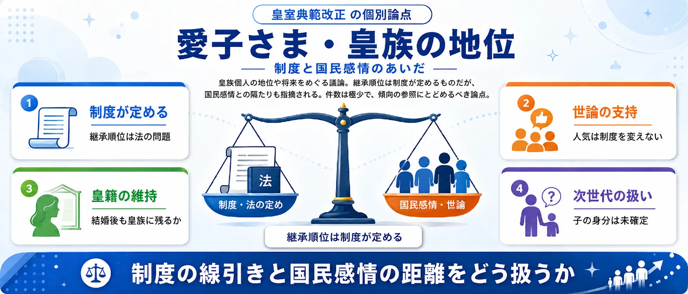

分析対象の意見
766件
収集した967件のうち意見と判定した投稿。AIが論点・立場・表現強度を分類
男系維持か、女系容認か。養子制度は妥当か。
収集した公開投稿967件のうち、意見と判定した766件をAIが5つの論点に整理しました。世論調査ではなく、SNS反応サンプルの論点比較です。
収集した967件のうち意見と判定した投稿。AIが論点・立場・表現強度を分類
賛否を述べた投稿が79%。残りはニュース共有など
皇位継承の原則をどこまで変えるかが中心
「改正への賛否」と「男系か女系か」——2つの軸が交差するため、保守派にも革新派にも賛成と反対が混在します。同じ「反対」でも右派は「女系への布石」、左派は「女性天皇が議論されない」と理由が正反対です。5つの争点を図解で把握してから投票に進んでください。件数はAIの分類結果から自動で反映しています。画像はタップで拡大できます。
男系維持 vs 女系容認253件
「父系の血」だけを正統とするか、母系も認めるか。継承原則をめぐる最大の思想対立。

旧宮家男系男子の養子制度153件
1947年に離脱した旧宮家の男系男子を養子縁組で皇籍復帰させる。合憲性が争点。

国会審議・成立手続き115件
成立までの審議期間・与野党の合意形成プロセスへの疑問。手続きの正当性が焦点。

女性天皇と女系天皇の違い96件
父方が皇統の「女性天皇」と、母方の血統による「女系天皇」。別概念だが混同されやすい。

愛子さま・皇族の地位69件
皇族個人の地位や将来に触れる投稿。件数は最少で、傾向の参照にとどめてください。

使い方: 5つの争点を図解で確認してから、次の投票で「自分が一番気になる争点」を選んでください。
2026年7月17日、改正皇室典範が参議院で可決・成立しました。女性皇族の結婚後の皇籍維持と、旧宮家の男系男子を養子に迎える制度が柱です。まず気になる論点を選び、次に改正への総合評価を選んでください。
1一番気になる論点を選ぶ （全2問）
※ サイト参加者の集計であり、世論調査ではありません。回答と、24時間の重複防止用に一方向変換した接続元情報をサーバーに保存します。
※ 世論調査ではありません。
中心の「皇室典範改正」を、論点ごとのセクターが囲みます。扇の大きさは投稿数、中心からの距離は感情の熱量（外側ほど強い反応）、点の色は改正への評価（緑=支持 / 赤=反対・慎重 / 灰=中立）。投票後は、選んだ論点セクターに「あなたはここ」を表示します。

最多の論点であり、感情の熱量も全論点で最高です。「父系の血だけが皇統の正統」とする男系維持派が3分の2を占め、「継承者不足の前では性別を問う余裕はない」とする女系容認派と正面からぶつかります。ただし男系維持派の内部でも評価は割れており、旧宮家養子で男系を補強できるとみて改正を評価する声と、女性皇族の皇籍維持を「女系への布石」と警戒する声が同居しています。
女系ではなく男系天皇の伝統継承を主張
@benjymin84 の投稿をXで見る
男系男子派を批判し、男女問わず安定的な皇位継承制度の確立を主張
@a_aok04352 の投稿をXで見る
1947年に皇籍を離れた旧宮家の男系男子を、養子縁組で皇族に迎える新制度です。反対と賛成の差が最も小さく、中立も4分の1を超えます。憲法14条（法の下の平等）に照らして特定の家系にだけ資格を認めてよいのか、80年近い断絶を経た血統に正統性があるのかという法解釈上の論点が中心で、感情より制度論で語られる傾向があります。
旧宮家養子案は憲法14条の法の下の平等に反する疑いがあると指摘
@kazuhi2024 の投稿をXで見る
旧宮家養子で男系継承を維持し皇統を途切れさせないと評価
@fi44504 の投稿をXで見る
改正の中身ではなく「通し方」を問う論点です。全論点で賛成が最も少なく、擁護する声はごくわずかしかありません。皇位継承という制度の根幹を、国民的な議論を尽くさないまま短期間で成立させたことへの不信が大半を占めます。改正に賛成の立場からも手続きだけは批判する投稿が見られ、賛否の軸とは別に「決め方」への不満が広がっていることがうかがえます。
安定継承の議論を欠いたまま決定が進んだ点を強く批判
@oaVVaHIYjJ2s8Y6 の投稿をXで見る
先送りが続けば停滞するとして早期決着を支持
@dainankosan の投稿をXで見る
「女性天皇」（父方が皇統の女性が即位する）と「女系天皇」（母方の血統で即位する）は別の概念ですが、議論の中でしばしば混同されます。反対・中立・賛成がほぼ三等分され、全論点で最も割れています。中立が多いのは、賛否ではなく用語の区別そのものを説明する投稿が一定数あるためです。過去に女性天皇は複数実在した一方、女系天皇の先例はないという歴史的な非対称が議論を複雑にしています。
女性天皇・女系天皇の容認は制度の根幹を損なうと警告
@5VcfqTGE08SrXGE の投稿をXで見る
女性天皇となっても支障がないよう教育されてきたと説明
@ayumuchan3 の投稿をXで見る
特定の皇族個人の地位や将来に触れる投稿を集めた論点で、件数は最少です。制度論から離れて個人の資質や国民的な人気を根拠にする議論が混じるため、扱いには注意が必要です。継承順位は制度が定めるものであって個人の人気で決めるべきではないという指摘と、国民感情を無視した制度設計は支持を失うという指摘が対立しています。件数が少ないため、傾向として参照する程度にとどめてください。
継承権は制度が定めるものであり個人の人気では決まらないと主張
@so_far_away0712 の投稿をXで見る
女性皇族の皇籍継続と子女の皇族化による解決を提案
@Aruhuvrv0 の投稿をXで見る
2026年7月17日、改正皇室典範が参議院で可決・成立しました。柱は2つ。第一に、女性皇族が結婚後も皇籍を維持できるようにする規定。第二に、旧宮家（戦後に皇籍を離れた家系）の男系男子を養子として皇族に迎え入れる制度の創設です。いずれも減り続ける皇族数への対応ですが、女性天皇・女系天皇の議論は先送りされました。
賛成派は「皇族が事実上絶えるリスクへの現実的対応」と評価します。反対派は大きく二方向に分かれます。保守派は「女性皇族の皇籍維持は女系天皇への布石だ」と警戒し、改革派は「女性天皇・女系天皇を議論しない改正は不完全だ」と批判します。同じ「反対」でも理由が正反対である点が、このテーマの構造的な特徴です。
SNS上の反応は改正反対・慎重が多数ですが、右派の「男系が壊される」という危機感と、左派の「女系が排除された」という不満が混在しています。賛成は少数ながら「男系維持の手段として評価」する右派と「第一歩としてまず前進」と見る中道派がいます。「改正に賛成か反対か」と「男系か女系か」が一致しないため、同じ立場の中でも評価が割れる複雑な構図になっています。
資料を当たる
967件の投稿から、条文の引用・人数・日付など事実として確かめられる主張を選び、e-Gov法令検索と内閣官房の公表資料に当たりました。確認できなかったものも、そのまま残しています。確認日は2026年8月20日です。
皇室典範第一条には「皇統に属する男系の男子」が継承すると書いてある
5件の投稿一次資料には何と書いてあるか。「皇位は、皇統に属する男系の男子が、これを継承する。」（皇室典範第一条）。「男系の男子」という表現は条文に明記されており、投稿が引用する文言と一致する。
条文と一致e-Gov法令検索のAPIで取得した原文（令和8年改正前の条文）で確認した。
旧11宮家は1947年（昭和22年）に皇籍を離れた。改正皇室典範は7月24日公布・10月24日施行
5件の投稿一次資料には何と書いてあるか。内閣官房資料に「昭和22年に皇籍離脱した11宮家（男子26方、女子25方）」と記載がある。e-Gov附則（令和8年7月24日法律第66号）は「公布の日から起算して三月を経過した日から施行する」と定めており、公布日の7月24日から3か月後は10月24日になる。
両方確認できた旧宮家の数（11家）と施行日（10月24日）はいずれも一次資料で確認できた。
養子本人は皇位継承資格を持たないが、その子孫の男性には付与される
3件の投稿一次資料には何と書いてあるか。改正皇室典範（令和8年法律第66号による改正後の条文）はe-Gov APIでは取得できなかった。施行前のため官報PDFも確認したが、新設条文の全文は取得できていない。
確認できず公布済みの改正後条文を一次資料として取得できなかったため、この主張の正否を確認できない。
有識者会議（2021年）で女性天皇または女系天皇に賛成したのは21人中11人、男系男子は7人
1件の投稿一次資料には何と書いてあるか。内閣官房が公開しているヒアリング資料に参加者21名の氏名は記載されている。ただし「11人賛成・7人男系」という区分と集計の根拠となる資料は見当たらなかった。
確認できず21名がヒアリングに参加した事実は確認できたが、賛否の内訳の集計表は公開資料から見つかっていない。
件数の数え方：本文の機械検索では、関係のない文脈で同じ語が出てくる投稿も拾ってしまいます。そのため候補を1件ずつ読み、実際にその主張をしている投稿だけを手で選んで数えています。賛成・反対どちらの投稿も含みます。
改正反対（男系維持）421件が最も多く、改正賛成（女系容認）は199件。賛否を明示しない中立・情報が146件で、全766件の19%を占めます。
全766件のうち33%。次点は旧宮家男系男子の養子制度の153件です。
感情の強さを0〜2で数値化した全体平均。論点別では男系維持 vs 女系容認が1.39で最も高く、その他・判断困難の1.10が最も冷静です。
| 男系維持 vs 女系容認 | 253 |
|---|---|
| 旧宮家男系男子の養子制度 | 153 |
| 国会審議・成立手続き | 115 |
| 女性天皇と女系天皇の違い | 96 |
| 愛子さま・皇族の地位 | 69 |
| その他・判断困難 | 80 |
| 合計 | 766 |
| 改正反対（男系維持） | 421 |
|---|---|
| 中立・情報 | 146 |
| 改正賛成（女系容認） | 199 |
| high（強い） | 301 |
|---|---|
| medium（中） | 396 |
| low（弱い） | 69 |